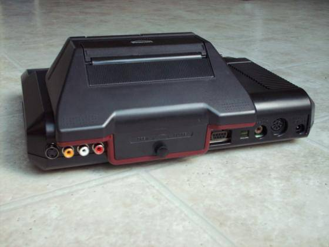

Chave de mudança de região para o Mega Drive 1 e 2
 :::. Por Gigacom!
:::. Por Gigacom!
Que tal fazer o seu Mega Drive falar
outras linguas além da tupiniquin? O processo é simples,
barato, e fácil de se fazer . Apesar de internamente esses dois consoles serem diferentes, a parte
onde iremos fazer a modificação é praticamente igual, portanto siga os
passos!
. Apesar de internamente esses dois consoles serem diferentes, a parte
onde iremos fazer a modificação é praticamente igual, portanto siga os
passos!
1 - Abra o console com cuidado, principalmente ao remover
a parte de cima, pois o led que indica quando o console está ligado, é
conectado por fios à placa mãe. Para desconectar o led, bem na base dele
você verá que há dois fios rigidos como arame fino. Apenas desentorte-os,
deixando os dois retos, e puxe o conector até desconectar por completo.
2
- Desparafuse toda a placa mãe do Mega Drive. Há uma infinidade de
parafusos segurando essa coisa no plástico do console! NÃO HÁ ENCAIXES!
Portanto, se você estiver sentindo que alguma coisa ainda está prendendo
a placa mãe no plástico ou nas chapas metálicas, olhe com mais cuidado, na certa é algum
parafuso espertinho escondido e disfarçado num canto, só pra você não o
encontrar...
3 - Na parte inferior direita da placa mãe, procure
essa parte, ela fica bem no canto à direita, acima da entrada dos controles:
Na foto acima, já estão identificados os pontos e regiões correspondentes nos jumpers (JP1 à JP4). Embaixo da placa mãe nos pontos correspondentes, você irá notar que os JP1 e
JP2 estão juntos, assim como os JP3 e JP4 também, portanto o console irá
interpretar a nacionalidade dele da seguinte maneira:
Americano/Brasileira - se JP1/JP2 e
JP3/JP4 estiverem ligados à trilha de +5V
Japonês - se JP1/JP2 e JP3/JP4 estiverem ligados ao terra
(ou ground, ou GND)
Europeu
- se JP1/JP2 estiverem ligados à trilha do +5V e JP3/JP4 ligados à
trilha do terra
Sempre haverá nos consoles fabricados pela Tec
Toy, a configuração padrão mencionada para Americano/Brasileiro, não
sendo possível portanto executar jogos com trava de região provenientes
do Japão e Europa. Para modificar isso e fazer o console aceitar jogos japoneses, deve-se cortar as conexões
padrões na parte de cima da placa mãe - o que pode ser feito passando uma faca de serra com ponta bem em cima da
trilha que faz as ligações ali no meio nos jumpers - e em seguida, instalando um switch ligando
esses pontos da forma mostrada abaixo:
Dessa forma, dependendo da
posição do switch, o Mega Drive agirá como um
console Americano ou Japonês. Para que ele se comporte como um
console Europeu branquinho de olho azul, é necessário
instalar outro switch para alterar a freqüência de
exibição da imagem (ou do jogo, sei lá, esse
negocio é meio confuso enfim, continuando...),
ou seja, instalando um switch nos JP3/JP4 da mesma forma como foi
instalado um nos JP1/JP2, igualzinho mesmo, se for pegar a foto acima,
o fio rosado seria soldado no ultimo ponto à esquerda, e os fios
branco e amarelo soldados na parte direita nos pontos dos JP3 e JP4.
enfim, continuando...),
ou seja, instalando um switch nos JP3/JP4 da mesma forma como foi
instalado um nos JP1/JP2, igualzinho mesmo, se for pegar a foto acima,
o fio rosado seria soldado no ultimo ponto à esquerda, e os fios
branco e amarelo soldados na parte direita nos pontos dos JP3 e JP4.
Geralmente, a instalação do switch para rodar games
japoneses, já resolve quase todo problema de se rodar algo estrangeiro,
já que jogos europeus são menos comuns desse lado do Atlântico ...
...
Onde instalar o(s) switch(s)
Uma
curiosidade, é que atrás do console, há um buraco do diâmetro de um
parafuso usado para fixar melhor o Master Converter, porém ele é do
tamanho quase exato de muitos switches de alavanca, o que pode evitar de
você abrir um rombo em alguma parte do console para instalar o
switch. Porém, se você ainda tem planos de utilizar um Master
Converter em seu Meguinha, a dica para furar o plástico do console sem fazer
estrago é... tchan-tchan-tchan-tchaaaaaaaannnn... usar uma FURADEIRA !!!
Isso mesmo, FU-RA-DEI-RAAA! Mas antes que você pense que sou louco, leia a explicação:
!!!
Isso mesmo, FU-RA-DEI-RAAA! Mas antes que você pense que sou louco, leia a explicação:
Usando uma furadeira com controle de rotação, com uma
broca ou mesmo lixa com ponta (daquelas de micro retifica), é
mais fácil fazer um
buraco de tamanho e proporções adequadas sem estragar
nada. Lógico, que ao encostar a broca/lixa
no plástico, a furadeira não pode estar girando
muito
rápido, se tiver vai é derreter tudo ou na melhor das
hipoteses, arremeçar a case pra fora da sua casa! E nem deve
girar muito
devagar, senão não faz nada além de arranhar a
coisa toda. Então, tenha cuidado, teste antes a técnica
em outra coisa de plástico - geladeira da mãe, TV da
sala, som do seu irmão, hometheather do teu pai - quando estiver
craque, e completamente certo de que não irá fazer
besteira, aí sim faça a coisa no Mega Drive. Ah, se
você tiver uma daquelas furadeiras de mão lá do
Polishop, vai ser muito mais fácil já que,
além
do peso e tamanho reduzido, possuem as brocas com lixa e controle de
rotação. Para ajudar, seria bom contar com a ajuda de
mais duas mãos, portanto, antes de brigar com a namorada ou
pular a cerca e acabar com o casamento, peça a ajuda dela para
segurar o plástico enquanto você mete a broca.
...
...
...
Tô falando no bom sentindo carinha  Não vá se ofender hein? Hehehe
Não vá se ofender hein? Hehehe  . Também
há a possibilidade de se fazer os orifícios usando um
ferro de solda. Não recomendo muito. Dependendo do ferro, pode
ser que derreta muito, pode ser que não... e o resultado costuma
não ficar o ideal sabe, fica meio derretido demais... mas
independente do que for usado, sempre é necessário dar um
acabamento, pra tirar as sobras e deixar tudo com um aspecto bem bacana. Exemplos de boas
furadas no plástico e instalação tanto do switch
como de saídas A/V, estão abaixo:
. Também
há a possibilidade de se fazer os orifícios usando um
ferro de solda. Não recomendo muito. Dependendo do ferro, pode
ser que derreta muito, pode ser que não... e o resultado costuma
não ficar o ideal sabe, fica meio derretido demais... mas
independente do que for usado, sempre é necessário dar um
acabamento, pra tirar as sobras e deixar tudo com um aspecto bem bacana. Exemplos de boas
furadas no plástico e instalação tanto do switch
como de saídas A/V, estão abaixo:
Esse é o Genesis mais modificado que já conheci. Lindo não?
Switch de região e frequências instalados. Perfeito

Olha aé o Master Converter numa boa nesse Genesis modificado
Detalhe do switch que altera a frequência do processador do Mega Drive. Simplérrimo de se fazer
Mais fotinhas como essas mostrando mods
em tudo quanto é tipo de consoles, podem ser vistas no site do
meu amigão ooXxXoo, clique aqui para visitar o site dele. Duvidas, reclamações, sugestões já sabem, é só irem no Trombone e postar lá . Bejo procêis!
. Bejo procêis!
Acesse o Trombone e comente sobre essa matéria!